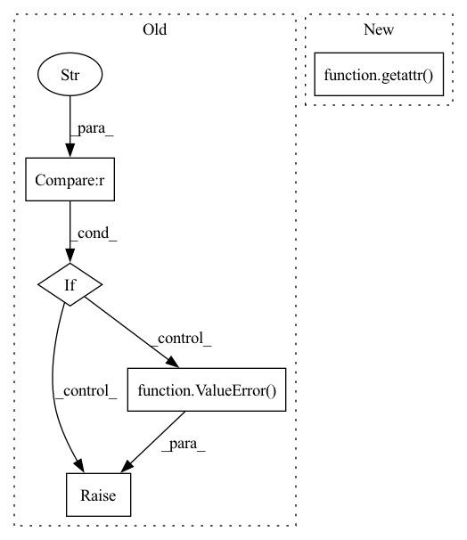

Pattern ID :742

Before Change
// Feature extractor definition
if self.config["feature_extractor"] == "PointNetPlusPlus":
self.feature_extractor = blocks.PointNetPlusPlus(self.config["pattern_encoding_size"], self.config) // pass cofiguration from upper layer
elif self.config["feature_extractor"] == "EdgeConvFeatures":
self.feature_extractor = blocks.EdgeConvFeatures(self.config["pattern_encoding_size"])
else:
raise ValueError("GarmentPattern3D::Error::Unsupported feature extractor {} requested in config".format(self.config["feature_extractor"]))
// Decode into pattern definition
panel_decoder_module = getattr(blocks, self.config["panel_decoder"])
After Change
self.loop_loss = metrics.PanelLoopLoss(data_stats=data_norm)
// Feature extractor definition
feature_extractor_module = getattr(blocks, self.config["feature_extractor"])
self.feature_extractor = feature_extractor_module(self.config["pattern_encoding_size"], self.config)
if hasattr(self.feature_extractor, "config"):
self.config.update(self.feature_extractor.config) // save extractor"s additional configuration
In pattern: SUPERPATTERN
Frequency: 3
Non-data size: 5
Instances
Fragment ID: 3617109
Project Name: maria-korosteleva/garment-pattern-estimation
Commit Name: fd5c692b41060b14597a002bbdb644aa33c2c7f4
Time: 2020-09-17
Author: mariako@kaist.ac.kr
File Name: nn/nets.py
M Class Name: GarmentPattern3D
N Class Name: GarmentPattern3D
M Method Name: __init__(6)
N Method Name: __init__(6)
M Parent Class: BaseModule
N Parent Class: BaseModule
M File Name: nn/nets.py
N File Name: nn/nets.py
M Start Line: 290
M End Line: 299
N Start Line: 290
N End Line: 297
'>
Before Change
def config_task(self) -> None:
Configures the task based on kwargs parameters.
if self.hyperparams["model"] == "resnet18":
pretrained = self.hyperparams["pretrained"]
if parse(torchvision.__version__) >= parse("0.12"):
if pretrained:
kwargs = {"weights": models.ResNet18_Weights.DEFAULT}
else:
kwargs = {"weights": None}
else:
kwargs = {"pretrained": pretrained}
self.model = models.resnet18(**kwargs)
in_features = self.model.fc.in_features
self.model.fc = nn.Linear(in_features, out_features=1)
else:
raise ValueError(f"Model type "{self.hyperparams["model"]}" is not valid.")
def __init__(self, **kwargs: Any) -> None:
Initialize a new LightningModule for training simple regression models.
After Change
else:
kwargs = {"pretrained": pretrained}
self.model = getattr(torchvision.models, model)(**kwargs)
in_features = self.model.fc.in_features
self.model.fc = nn.Linear(in_features, out_features=1)
'>
Fragment ID: 3617107
Project Name: microsoft/torchgeo
Commit Name: 9dee4b166c2f18261d3e217c73a0ba6907d089b0
Time: 2022-08-14
Author: ajstewart426@gmail.com
File Name: torchgeo/trainers/regression.py
M Class Name: RegressionTask
N Class Name: RegressionTask
M Method Name: config_task(1)
N Method Name: config_task(1)
M Parent Class: pl.LightningModule
N Parent Class: pl.LightningModule
M File Name: torchgeo/trainers/regression.py
N File Name: torchgeo/trainers/regression.py
M Start Line: 33
M End Line: 48
N Start Line: 32
N End Line: 49
'>
Before Change
inverse : bool, optional
Whether using the activation in a transposed model.
if activation == "relu":
return lambda *args: nn.ReLU()
elif activation == "gdn":
return partial(GDN, inverse=inverse)
else:
raise ValueError(f"Uknown activation={activation}")
After Change
if activation == "gdn":
return partial(GDN, inverse=inverse)
return getattr(torch.nn, activation)
'>
Fragment ID: 3617106
Project Name: yanndubs/lossyless
Commit Name: 716f208894499ca8ae3487815a519ed279abc83c
Time: 2021-01-06
Author: yanndubois96@gmail.com
File Name: lossyless/architectures.py
M Class Name: AnonimousClass
N Class Name: AnonimousClass
M Method Name: get_Activation(2)
N Method Name: get_Activation(2)
M Parent Class:
N Parent Class:
M File Name: lossyless/architectures.py
N File Name: lossyless/architectures.py
M Start Line: 358
M End Line: 363
N Start Line: 378
N End Line: 380